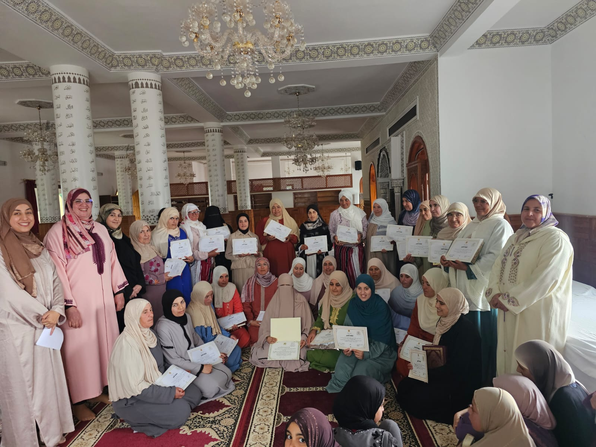
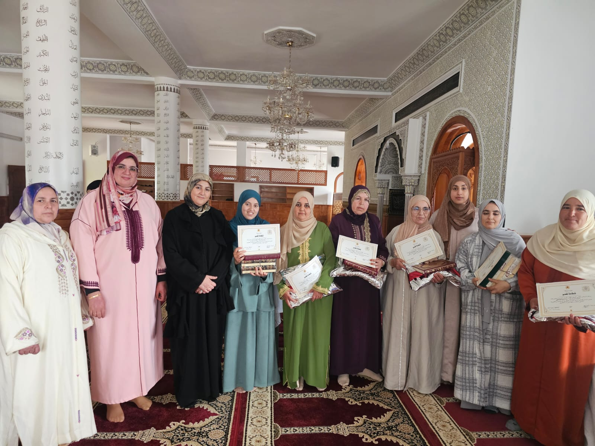
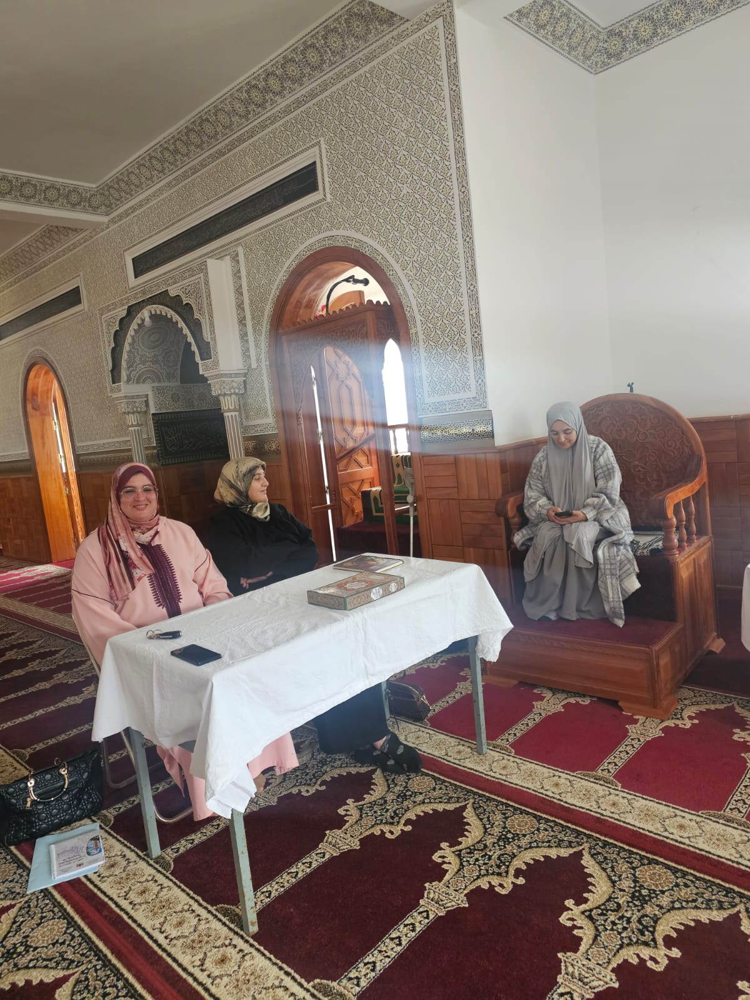
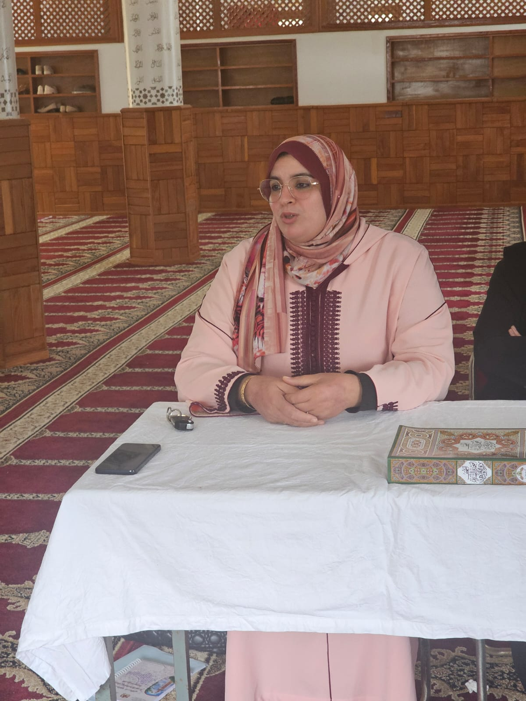

الإنتاج العلمي والفكري للدكتورة عائشة الطويل




من أعظم ما تحتاج إليه الأسرة في زماننا أن تتقن فن الحوار مع أبنائها، فالحوار ليس مجرد تبادل للكلمات، بل هو وسيلة لبناء الثقة، وتنمية الشخصية، وغرس القيم، واحتواء المشكلات قبل أن تتفاقم. وقد قدّم لنا القرآن الكريم والسنة النبوية أرقى النماذج في الحوار؛ فالله تعالى حكى لنا حوار لقمان مع ابنه، وحوار إبراهيم عليه السلام مع ولده، وحوار الأنبياء مع أقوامهم، وكلها تقوم على الرفق، والإقناع، واحترام عقل المخاطب.
ومن أروع النماذج النبوية حوار النبي صلى الله عليه وسلم مع الشاب الذي استأذنه في الزنا، فلم يزجره ولم يعنفه، بل فتح معه باب الحوار، وأيقظ في قلبه الضمير، حتى خرج وقد تبدل فكره واستقامت نفسه. وهكذا يعلّمنا النبي صلى الله عليه وسلم أن الكلمة الطيبة قد تغير الإنسان أكثر مما تغيره الشدة.
إن كثيرا من الآباء والأمهات يشتكون من ضعف التواصل مع أبنائهم، بينما يكون السبب في كثير من الأحيان غياب الحوار الحقيقي، إذ يتحول الحديث إلى أوامر متتابعة أو لوم دائم، فيفقد الأبناء الرغبة في الحديث، ويبحثون عمن يصغي إليهم خارج الأسرة.
إن التربية الناجحة لا تقوم على كثرة الكلام، وإنما على حسن الاستماع، ولا على إصدار الأحكام، وإنما على فهم المشاعر، ولا على التخويف، وإنما على بناء الثقة. ولذلك فإن الحوار الهادئ يحقق مكاسب تربوية كثيرة، منها:
ولنحرص جميعا على أن يكون في بيوتنا وقت يومي للحوار، بعيدا عن الهواتف والشاشات، نستمع فيه إلى أبنائنا أكثر مما نتحدث إليهم، ونشعرهم بأن آراءهم محل تقدير، وأن أخطاءهم فرصة للتوجيه لا للإدانة.
وقفة:الكلمة التي تقال بمحبة تفتح قلبا، أما الكلمة التي تقال بغضب فقد تُغلق بابًا كان يمكن أن يبقى مفتوحا.
رسالة تربوية:إذا أردت أن يسمعك ابنك، فاحرص أولا أن يشعر أنك تسمعه.
في سياق النشاط العلميقدمت هذه الأفكار ضمن المداخلة التي ألقيتها في إطار الندوة العلمية المنظمة من طرف المجلس العلمي المحلي لإقليم الفحص أنجرة، بعنوان "التربية المتكاملة : مفهومها، أهدافها، مرتكزاتها" بتاريخ 6 ماي 2025م، وبحضور ثلة من المربين والمهتمين بالشأن التربوي